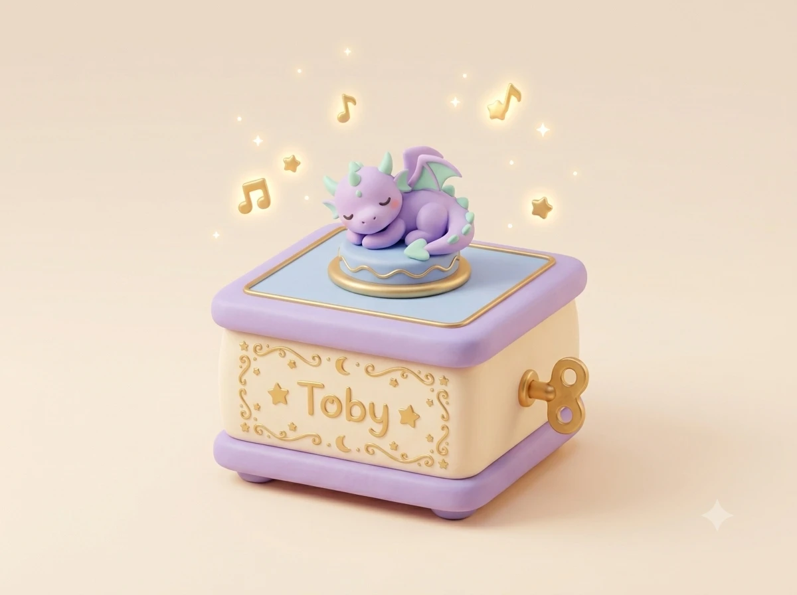
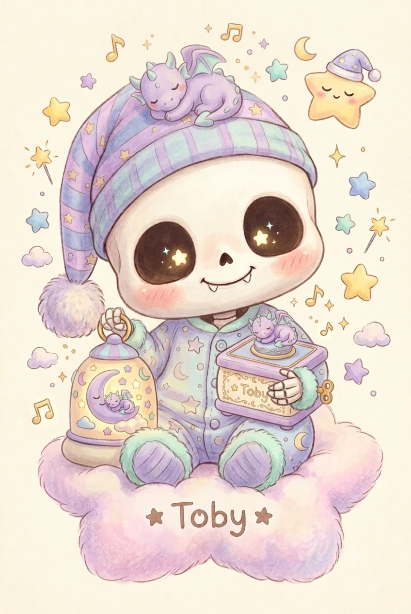
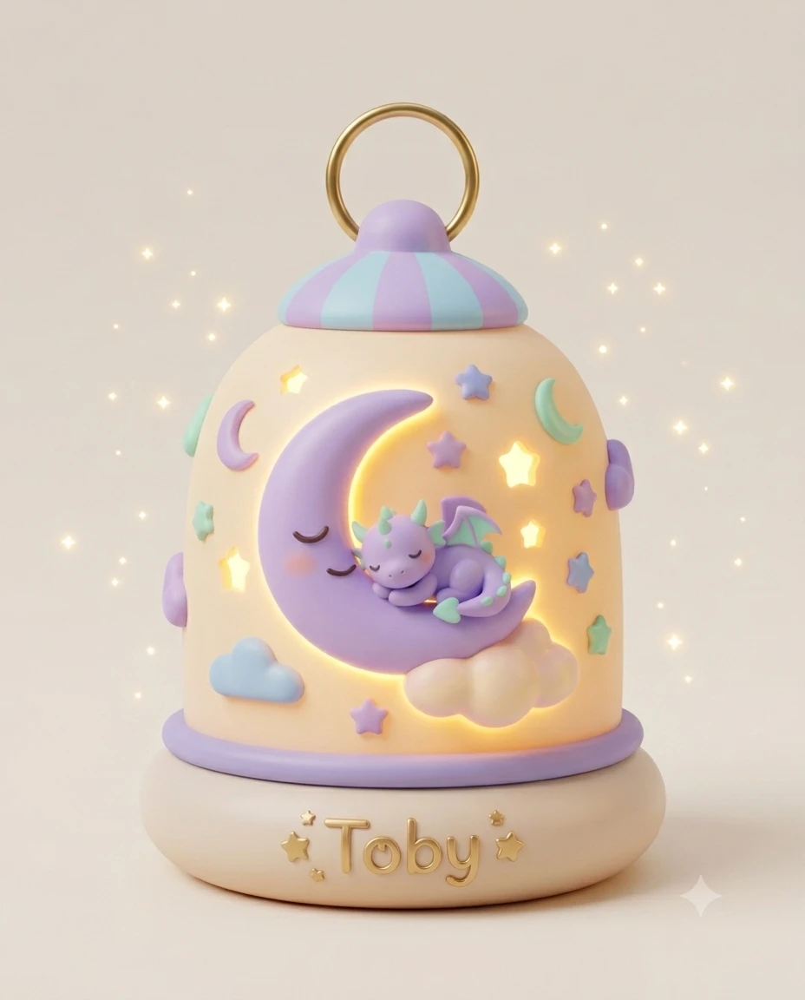

The Toby Box
My very first music box, built from a teacup, a spoon and a lot of patience. Wind it up and it plays until the spring runs down. Snorbit snores along in tune.
The spring is loose. Wind it up to play.

Oh! Hi. I was only resting my eyes.
I tuck the whole sky in.
I'm the Lullaby Tinkerer at the Cloud Cradle Workshop. I build music boxes, nightlights and toys that help the little creatures of Hushbury fall asleep. My dragon Snorbit helps, mostly by snoring.
A pocket-sized dragon who has been asleep since we met. He snores in tune and keeps my head warm.
Everything on this shelf really works. Pick a toy to play with it.

My very first music box, built from a teacup, a spoon and a lot of patience. Wind it up and it plays until the spring runs down. Snorbit snores along in tune.
The spring is loose. Wind it up to play.

Every creature likes a different glow. The owls want honey, the mice want bubblegum. Pick one, and my eyes change too.
Eleven wobbly blocks filled with dried peas. Some of them spell secret words, and every word does something different.
Tap the blocks to spell a word.
Fallen stars make the best nightlights, so I catch them in a jar. The trick is staying quiet: three alarm clocks and Snorbit wakes up.
Move the jar with your mouse, a finger, or the arrow keys.
Every night Snorbit and I fly over the rooftops of Hushbury and drop a dream down every chimney. Pick a home and watch the delivery.
Deliver a dream to:
Snorbit is waiting at the Cloud Cradle Workshop with a sack of dreams.
0 of 5 homes dreaming
Most babies get measured on the nursery wall. I measure my skills instead, in pencil, whenever nobody is looking.
Tap a pencil mark
Every mark has a note in my own handwriting. Well, crayon.
I wrote Snorbit a bedtime story. He has never heard the ending, because he always falls asleep on page one. Turn the pages quietly.
Once upon a bedtime, a little purple dragon called Snorbit lay down for a quick nap.
He napped through breakfast. He napped through lunch. He even napped through the stars' very noisy bedtime singalong.
Toby tried everything. He sang. He rattled his blocks. He tickled Snorbit's tail with a feather. Snorbit just snored, perfectly in tune.
So Toby built a lantern shaped like the moon, so that wherever Snorbit dreamed, it would never be dark.
And somewhere inside that lantern, curled up on a cloud, Snorbit smiled in his sleep.
The End
(Snorbit is still asleep. He'll hear the ending tomorrow. Probably.)
Scene 1
One windy night, a tiny star tumbled out of the sky and landed in a warm sock on the Cloud Cradle washing line. By morning the sock had giggled, wriggled and turned into a baby. That was me. I kept the star. You can see it in my eyes.
Scene 2
Under the washing line sat a laundry basket, and in it a little purple dragon, curled up like a warm croissant. I said hello. Snorbit snored. We've been best friends ever since, and Snorbit still hasn't fully woken up.
Scene 3
The sky above Hushbury was restless. The owls hooted, the clouds fidgeted and the moon tossed and turned. So I took a teacup and a spoon and wound up my first music box. The moon yawned. The owls went quiet. That was my first lullaby.
Scene 4
The Cloud Cradle Workshop gave me a tiny toolbelt and a job title longer than I am. Every night I hang the lanterns, wind the music boxes and tuck the sky in, corner by corner. If you're still up, I'm on my way.
Every star up here is a wish someone pinned to my wall. Tap one to read it.
Looking up at the sky…
Add your wishWhat would you like to dream about tonight? Pin your wish to the nursery wall and Toby will try to build it.
Toby is typing…
You're the nightlight now. Shine on the glow stickers to charge them.